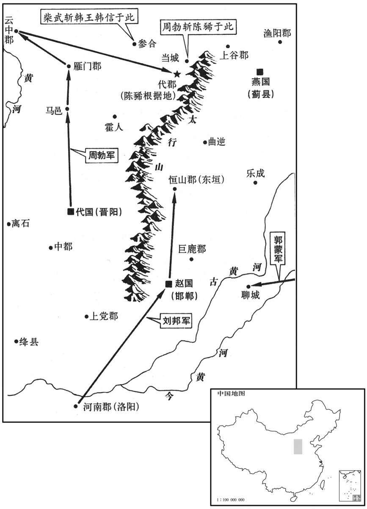

公元前197年资治通鉴：本年记事、原文与白话对照
按原书编年位置阅读；追叙和史论不等于本年发生的事件。白话采用所据译本，缺译不以生成译文补齐。
卷12 · 本年记事
公元前197年 · 汉太祖高皇帝十年
十年〔（甲辰、前一九七）〕
本年事件索引（现代整理）

本年形势与背景参考图
夏，五月，太上皇崩于栎阳宫。秋，七月，癸卯，葬太上皇于万年，〔师古曰：三辅黄图云：高祖初居栎阳，太上皇因居栎阳；既崩，葬其北原，起万年邑置长、丞焉。考异曰：汉书：“五月，太上皇后崩。”“七月，癸卯，太上皇崩，葬万年。”荀纪，五月无“后”字，七月无“崩”字。盖荀悦之时，汉书本尚未讹谬故也；今从之。〕楚王、梁王皆来送葬。赦栎阳囚。〔臣瓒曰：万年陵在栎阳县，故特赦之。〕
夏季，五月，太上皇于栎阳宫驾崩。秋季，七月癸卯（十四日），将太上皇安葬于万年。楚王、梁王都来送葬。高帝下令特赦栎阳囚犯。
定陶戚姬有宠于上〔如淳曰：姬，音怡。众妾之总称也。汉官曰：姬妾数百。臣瓒曰：汉秩禄令及茂陵书：姬，内官也，秩比二千石，位次倢妤下，在七子、八子之上。索隐曰：如淳音怡，非也。茂陵书，姬是内官，是矣；然官号及妇人通称姬者，姬，周之姓，所以左传称伯姬，叔姬；以言天子之宗女贵于他姓，故遂以姬为妇人美号。〕生赵王如意。上以太子仁弱，谓如意类己；虽封为赵王，常留之长安。上之关东，戚姬常从，〔从，才用翻。〕日夜啼泣，欲立其子。吕后年长，常留守，益疏。〔长，知两翻。守，式又翻。疏，与疎同。〕上欲废太子而立赵王，大臣争之，皆莫能得。御史大夫周昌廷争之强，上问其说。昌为人吃，〔吃，音讫，言之难也。〕又盛怒，曰：“臣口不能言，然臣期期知其不可！陛下欲废太子，臣期期不奉诏！”〔师古曰：以口吃故，重言期期。贡父曰：期，读如荀子“目欲綦色”之綦；楚人谓极为綦。孔颖达曰：释诂曰，汔也；杜预曰：汔，期也。然则期字虽别，皆是近义，言其近当如此。史记称高祖废太子，周昌曰：“臣期知其不可”，周昌又曰：“臣期不奉诏。”言期者，意亦与汔同。〕上欣然而笑。吕后侧耳于东厢听，〔韦昭曰：东厢，殿东堂也。师古曰：正寝之东西室皆曰厢，言似箱箧之形。〕既罢，见昌，为跪谢，曰：“微君，太子几废。”〔为，于伪翻。几，居依翻。〕
定陶女子戚夫人受高帝宠爱，生下赵王刘如意。高帝因为太子为人仁慈懦弱，认为刘如意像自己，虽然封他为赵王，却把他长年留在长安。高帝出巡关东，戚夫人也常常随行，日夜在高帝面前哭泣，想要立如意为太子。而吕后因年老，常留守长安，与高帝愈发疏远。高帝便想废掉太子而立赵王为继承人，大臣们表示反对，都未能说服他。御史大夫周昌在朝廷上强硬地争执，高帝问他理由何在。周昌说话口吃，又在盛怒之下，急得只是说：“臣口不能言，但臣期期知道不能这样做，陛下要废太子，臣期期不奉命！”高帝欣然而笑。吕后在东厢房侧耳聆听，事过后，她召见周昌，向他跪谢说：“要不是您，太子几乎就废了。”
时赵王年十岁，上忧万岁之后不全也；符玺御史赵尧〔符玺御史，御史之掌符玺者也，属御史大夫。玺，斯氏翻。〕请为赵王置贵强相，〔为，于伪翻。相，息亮翻。〕及吕后、太子、群臣素所敬惮者。上曰：“谁可者？”尧曰：“御史大夫昌，其人也。”上乃以昌相赵，〔为吕后杀戚夫人及如意张本。〕而以尧代昌为御史大夫。〔考异曰：史记、汉书张良传，皆云“十二年上击黥布还，愈欲易太子”。按百官表：“十年，赵尧为史大夫”，则是时太子位已定；今从之。〕
当时赵王刚十岁，高帝担心自己死后他难以保全；符玺御史赵尧于是建议为赵王配备一个地位高而又强有力，平时能让吕后、太子及群臣敬惮的相。高帝问：“谁合适呢？”赵尧说：“御史大夫周昌正是这样的人。”高帝便任命周昌为赵国的相，而令赵尧代替周昌为御史大夫。
初，上以阳夏侯陈豨为相国，监赵、代边兵；〔夏，音贾。豨，许岂翻，又音希。徐广曰：为赵相国，将兵守代。监，古衔翻。〕豨过辞淮阴侯。唯阴侯挈其手，辟左右，〔辟，音辟，除也；屏除左右也。〕与之步于庭，仰天叹曰：“子可与言乎？”豨曰：“唯将军令之！”淮阴侯曰：“公之所居，天下精兵处也；而公，陛下之信幸臣也。人言公之畔，陛下必不信；再至，陛下乃疑矣；三至，必怒而自将。〔将，即亮翻。〕吾为公从中起，天下可图也。”〔为，于伪翻。〕陈豨素知其能也，信之，曰：“谨奉教！”
起初，高帝任命阳夏侯陈为相国，监管赵国、代国边境部队。陈拜访淮阴侯韩信并向他辞行。淮阴侯握着他的手，屏退左右随从，与他在庭院中散步，忽然仰天叹息道：“有几句话，能和你说吗？”陈说：“只要是将军您的指示，我都听从。”韩信说：“你所处的地位，集中了天下精兵；而你，又是陛下信任的大臣。如果有人说你反叛，陛下肯定不信；然而再有人说，陛下就会起疑心；说第三次，陛下必定会愤怒地亲自率领大兵来攻打你。请让我为你做个内应，那么天下就可以谋取了。”陈平常便知道韩信的能力，相信他，于是说：“遵奉你的指教！”
豨常慕魏无忌之养士，〔魏无忌，信陵君也。〕及为相守边，告归，〔汉律：二千石有予告，有赐告。予告者，在官有功最，法所当得也。赐告者，病满三月当免，天子优赐其告，使得带印绶、将官属归家治病。至成帝时，郡国二千石赐告不得归家；至和帝时，赐、予皆绝。师古曰：告者，请谒之言，谓请休耳。或谓之谢，谢，亦告也。左传曰：韩献子告老；礼记曰：若不得谢。汉书诸云谢病，皆同义。〕过赵，宾客随之〔【章：甲十五行本“之”下有“者”字；乙十一行本同；孔本同。】〕千余乘〔乘，绳证翻。〕邯郸官舍皆满。赵相周昌求入见上，〔见，贤遍翻。〕具言豨宾客甚盛，擅兵于外数岁，恐有变。上令人覆案豨客居代者诸不法事，多连引豨。豨恐；韩王信因使王黄、曼丘臣等说诱之。〔说，式芮翻。诱，音酉。〕
陈常常羡慕当年魏国信陵君魏无忌养士的行为，及至他做相国驻守边境，告假回来时，经过赵国，跟随他的宾客乘坐的车有一千多辆，把邯郸城的官舍都住满了。赵相周昌见此情况请求入京进见高帝，详述陈门下宾客盛多，又专擅兵权在外数年，恐怕会有事变等等。高帝令人再审查陈宾客在代国时的种种不法之事，很多牵连到陈。陈听说后十分恐慌，韩王信趁机派王黄、曼丘臣等人来劝诱他联成一伙。
太上皇崩，上使人召豨，豨称病不至；九月，遂与王黄等反，自立为代王，劫略赵、代。上自东击之。至邯郸，喜曰：“豨不〔【章：甲十五行本“不”下有“南”字；乙十一行本同；孔本同；张校同。】〕据邯郸而阻漳水，吾知其无能为矣！”
太上皇驾崩时，高帝派人来召陈，陈称病不去；九月，他便与王黄等人公开反叛，自封为代王，率军劫掠赵国、代国。高帝领兵从东面进击，到达邯郸，高兴地说：“陈不占据邯郸而去扼守漳水，我知道他没多大能耐了！”
周昌奏：“常山二十五城，亡其二十城；请诛守、尉。”〔秦灭赵，置巨鹿、邯郸郡；汉始置常山郡。杜佑通典曰：汉常山郡故城，在赵州元氏县西。守者，郡守；尉者，都尉。守，式又翻。〕上曰：“守、尉反乎？”对曰：“不。”〔不，读曰否。〕上曰：“是力不足，亡罪。”
周昌奏报说：“常山郡二十五城，有二十城都失陷了，请处死郡守、郡尉。”高帝问：“郡守、郡尉反叛了吗？”周昌回答：“没有。”高帝说：“这是他们力量不足，没有罪。”
上令周昌选赵壮士可令将者，白见四人。〔将，即亮翻；下同。见，贤遍翻。〕上嫚骂曰：“竖子能为将乎？”四人堑，皆伏地；上封各千户，以为将。左右谏曰：“从入蜀、汉，伐楚，赏未徧行；今封此，何功？”上曰：“非汝所知。陈豨反，赵、代地皆豨有。吾以羽檄征天下兵，未有至者，今计唯独邯郸中兵耳；吾何爱四千户，不以慰赵子弟！”皆曰：“善！”
高帝又令周昌选挑赵国壮士中可充当将领的，周昌报告说有四个人，并让他们来进见。高帝谩骂道：“你们这群小子能当将军吗？”四人大为惭愧，都伏在地上；高帝却真的赏赐各人以一千户的封邑，任用为将领。左右随从劝阻说：“跟随您进兵蜀、汉，征讨楚王的功臣都没有全部封赏；今天封他们，凭的什么功劳？”高帝说：“这就不是你们所能知道的了。陈造反，赵国、代国一带都被他占有。我用紧急军书征调天下军队，至今还没有到来的，现在估计能够调遣的只有邯郸城中这些士兵而已，我为什么还要吝惜那四个千户封邑，不用来抚慰赵国子弟呢！”属下都点头说：“好主意。”
又闻豨将皆故贾人；上曰：“吾知所以与之矣。”乃多以金购豨将，豨将多降。〔师古曰：与，如也，言能如之何也。贡父曰：与，犹待也。原父曰：知与之者，知所以与之之术也。豨将皆故贾人，贾人嗜利，乃多以金购之。贾，音古。〕
高帝又听说陈的部将很多过去都是商人，便说：“我知道如何对付他们了。”下令多用黄金去收买陈部将，果然有大部分来降。